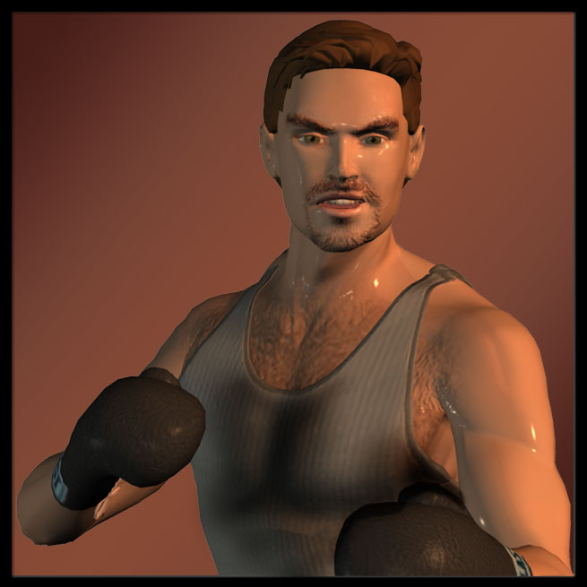
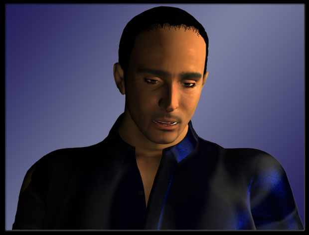

Zach ...fourteen, fifteen, sixteen, seventeen, eighteen... POW
Zach (Dodging a punch and then countering with a flurry of his own) One, two, three, four, five, JUST LIKE THAT, ANOTHER HIT JUST LIKE THAT

Opponent (Going down on one knee) JESUS, ISAACSON, THIS IS JUST AN EXCERCISE
Zach GET UP, GET UP YOU SHITBAG AND HIT ME, HIT ME, C'MON LITTLE GIRL — ARE YOU TOO SCARED TO HIT ME?
Zach (In his head) Alpha, beta, gamma, delta, epsilon, zeta, eta, theta, iota... BAM
Zach GETUPGETUPGETPUPGETUPGETUPGETUPGETUPGETUP, GET UP FAGGOT AND FIGHT, FIGHT, FIGHT ME
Supervisor COOL IT, ISAACSON
Opponent I don't know what your deal is, dude, but if you come at me like that again, I'll fucking KILL YOU
Zach (Trying to get in his face) WHAT ARE YOU WAITING FOR, ASSHOLE? - DO IT, DO IT, DO IT
Supervisor GET OUTTA THE RING, RIGHT NOW
Zach IS THERE ANYONE IN HERE MAN ENOUGH TO FIGHT ME? ANYONE AT ALL?
Zach HEY CRUNCH, CARE TO SHOW THEM HOW IT'S DONE?
Craig With my head history, I don't care to be the next Steve Young - find someone else, Zachary
Zach I saw you downing shots last week at Muldoon's, you couldn't be too concerned about your health, Captain Morgan!
Supervisor SHUT IT THE HELL DOWN OR I'M SHUTTING YOU OUT OF THIS GYM
Supervisor You have two choices - button that yap of yours and work it out on the bag or get the hell outta here
Zach Just looking for a quality opponent...
Supervisor That's not what you're looking for, Zach — I suggest you go elsewhere and find it
Zach Screw you
Supervisor (Quietly in Zach's ear) Because we're buds, I'm only suspending you for a week... pull this crap again, I'll not only get you banned from here but from every gym in Quartz County - understood?
Zach (In his head) Chelsea, Arsenal, Aston Villa, Man U, Tottenham, Bolton, Liverpool...
Supervisor IS THAT UNDERSTOOD, ISAACSON?
Zach (Walking off) Got it
Zach Are you too much of a pussy to hold the bag for me?
Craig (Doing so) Care to tell me about the new inhabitant in your sigmoid colon?
Zach (In his head) Tet, chet, zayin, vav, he, dalet, gimel, bet, alef...
Craig Fine, don't talk to me — keep hitting, that solves everything
Zach (Stopping to catch his breath) Maybe we should just crack open a couple of six-packs instead, eh Phelps?
Zach (Resuming his verbal and non-verbal punches) Did they demote you to Coast Guard shrink or is it bartender now?
Craig You need to be faster on your feet... arm strength isn't enough
Zach (Conciliatory) Gotcha
Craig Just trying to help
Zach Thanks, I appreciate it
Craig Since you've become a total gym rat now, for whatever reason, might as well learn how to go after an enemy properly
Zach How do you know what I'm doing here, Craig? — maybe it's simply to look hot for the ladies, did you ever think of that?
Craig You never had trouble in that department before, Zachary - besides, I know seething when I see it - you forget how long I've worked with Anita...
Zach (Smacking it again) Do you really want to know what's happened to me, what's going on with me? — it's the same thing that has half this town in the Twilight Zone, the same thing that has you hitting the bottle again, the same thing that has Lieutenant Fury no longer a lieutenant - we're all getting in position!
Craig Position for what?
Zach Don't play stupid, Crunch, you're all brawn but I know there's a very sharp brain up there when it's not soaked in bourbon
Craig I'm done with this, Isaacson — get someone else to hold your baggage!
Zach See this? SEE?
Craig (Pushing Zach away) What is it, a bruise?
Zach No, it's a tattoo of a slingshot
Craig I don't understand
Zach (Voice braking) I got it to remind myself... every time I hold my fist up, I REMIND myself
Craig Of what?
Zach Of what David used to bring down Goliath — but instead of a rock, I'll use a keyboard
Craig I thought marking yourself was against your religion?
Zach This expression is beyond my religion, I'm beyond my religion...
Zach And if the keyboard doesn't work, these will!
Zach (In his head) Toyota, Nissan, Honda, Mitsubishi, Subaru, Isuzu, Mazda, Suzuki, Kawasaki — wait, that's a motorcycle — SHIT... one, two, three, four, five, six, seven, eight...
Zach Gracie has eight fingers — AAAAAARRRRRRRRGGGGGGGGGHHHHHH
Zach (In his head) All Apologies, Dumb, Frances Farmer Will Have Her Revenge On Seattle, Heart-Shaped Box, Milk It, Pennyroyal Tea, Radio Friendly Unit Shifter, Rape Me...
Zach (Screaming) MORRIGAN, MORRIGAN — I HEARD YOU, MORRIGAN — WHERE ARE YOU?
Blue robe You never know when to quit, do you Eyes?
Zach (Spitting blood) Who... are you?
Zach Let Morrigan go!
Blue robe You don't need to worry about her, she's already dead
Zach BASTARDS
Blue robe It's too bad you won't be... I begged them to let me kill you instead of what's about to happen
Zach YOU DON'T SCARE ME, BEDSHEET
Blue robe I should
Blue robe See, the boss thinks you'd be a better example than a corpse
Blue robe (Kneeling lower to Zach's face) It's nothing personal, Zach - in fact, I've always respected you... but we each have a purpose to fulfill
Blue robe (Stepping away) BREAK HIM
Zach NOOOOOOOOO
Patron Buddy, hey buddy, you okay?
Patron (Faltering) WHAT THE HELL?
Zach GET AWAY FROM ME, ASSHOLE
Patron JUST CHECKING TO SEE IF YOU WERE ALRIGHT — GET SOME HELP, MAN
Zach FUCK OFF AND DIE
Zach (In his head) Arette, Caballo Negro, Cuervo, Galardon, La Corfradia, Sauza...
Marv Starting without me, Eyes?
Zach Hey, Marv — thanks for meeting me
Marv (Letting out a big sigh) Anything for my favorite paper boy
Zach Ex-paper boy...
Marv You never did tell me why you quit?
Zach I'm freelancing now
Marv It must be keepin' ya pretty busy — the guys sure do miss your ugly mug at the pool hall
Zach They just miss taking my money
Marv (Pointing to Zach's arms) Well, you've got some guns grownin' there — we sure could use those at the firehouse - I'll hook it up if ya ever get tired of the freelancin'
Zach Thanks, Marv, but I have important business I need to finish...
Marv (Lowering his voice) Geez, this ain't your usual haunt, Eyes — are ya switchin' teams on us?
Zach NEVER... I have to meet another source here later
Marv Is it about, ya know, my information?
Zach Not directly
Marv Good, ‘cause the quicker I dump this in your lap, the quicker I can get away from it
Zach Hand ‘em over
Marv I've seen a lot of weird shit on the job before but in all my years I ain't ever seen nothin' like this!
Zach (Flipping through the envelope's contents) And you probably never will again
Marv (Draining his beer) That was not a good scene - me and Rob, the one who took those, are still havin' nightmares...
Zach (Searching the photos) I understand
Marv None of the boys could believe what they were seein' — we had a hell of a time knockin' the fire down but then... dealin' with those bodies
Marv (Letting out a slow sigh) Do you know these hooded freaks, Zach?
Zach (Voice dropping an octave) Intimately
Zach Can't talk about it now, Marv
Marv Big surprise — ya know, the second we got back to the firehouse from that call, a squad of G-men were there waiting for us
Zach I'm guessing they told you to forget what you saw?
Marv Not only forget what we saw but pretend the whole thing never happened at all
Zach (Wiping his nose) Heh
Marv They tried to tell us that it was a ‘terrorist event' and they didn't want the country going into a massive panic — ya know, the stock market takin' a dive and all that...
Zach Right
Marv Rob took the photos with his cell phone, he was the only one who had the smarts to do that
Zach Please tell him thank you for me
Marv Hey, he wanted to destroy the pics but I took them instead — I knew that this was important and that I could trust ya with them
Zach I'm forever in your debt, Marv
Marv All I ask is that ya give me a few months — the retirement will kick in and then me and Dolores are headed up to Idaho
Zach No problem, this is going to take some time to crack, but I will do so, I guarantee you that
Marv You're a good guy, Zach, I don't want anything bad happenin' to ya
Zach It already has...
Zach (Extending his hand) Thank you again, Marv
Marv (Shaking it) Take care of yourself, Eyes
Zach (In his head) Azure, beryl, cerulean, cobalt, indigo, navy, periwinkle, royal, sapphire, teal, turquoise, ultramarine...
Zach I know I'm a popular man, Jessica, but there's no need to leave 20 messages...
Zach What's... going on, Jess?
Jessica (Unable to look him in the eye) Have a seat, Zach
Zach (Eying the security guard) I'd rather stand, thanks
Bill This is hard for us, Isaacson, you were one of our best and brightest
Zach ‘Were' - past tense?
Jessica Look, I don't want to do this but you haven't given us much choice...
Zach Um, what ‘choice'? — you pay me and I turn in excellent work, that's how it's been since I started here!
Jessica That's just it — you haven't been turning in anything lately
Zach Okay, so I've been a little out of it...
Bill You've been MIA since the Mt. Wiggins eruption
Zach True enough but I would hope that my prior performance in this position would allow you to cut me some fucking slack
Jessica Zach...
Bill Party a little too much, skip a few days, no problem — but we need a reporter here when events happen and there have been A LOT of events happening these days
Jessica One of the biggest was yesterday with the hospital explosion and we couldn't reach you — we had to give the story to Porter
Zach (Spitting with disgust) Porter - have fun with that!
Bill We've been giving too many of your assignments to Porter and others — now, it will be official
Zach (Getting in Jessica's face) I can understand this guy being an ungrateful asshole, but you, Jess?
Jessica (Pleading) Then give us something, ANYTHING — if you're doing drugs, we'll understand, or if you have some other health issue going on, be honest about it — we can put you on leave, get you into treatment...
Zach I don't need treatment, I need a job
Bill Your avoidance is not helping
Jessica (Arms folded) We need someone to cover the new PCOC drilling operation in the Kiyomis — you need to go over there tonight...
Jessica This is your last chance, Zach
Zach Sorry, I can't do it
Bill That's it — give the guard your security clearance, you have 15 minutes to clean out your desk — Jessica will retrieve any personal files on the company computer for you... goodbye, Isaacson
Jessica I'm sorry, Zach, you gave me no other choice...
Zach (In his head) a, b, c, a and c, b and c, a and b, NONE OF THE ABOVE, NONE OF THE ABOVE, NONE OF THE ABOVE...
Man #1 Timmy, how are you holding up?
Man #2 We are so sorry, we know how much you loved him

Tim Thanks... but I'm just not ready to deal with this here, I hope you understand?
Man #1 (Patting his arm) Of course we do
Man #2 When you need us, you know where to find us
Tim Thanks
Tim (Low but still audible to Zach) Jesus Christ, not the voicemail again... Erika, Erika where are you? — please answer me — this is Tim, I KNOW it was you at the cabin and I KNOW you have my bag — why are you doing this? — I need my bag — contact me as soon as you GET this!
Zach Hajanian...
Tim (Startled) Oh, Zach, I didn't see you there... hello
Zach Hello
Tim You wouldn't happen to know where Erika is, would you?
Zach Can't help you there
Tim It seems no one has seen her since her father's memorial service
Zach I'm sure she's off dealing with her grief... as I'm sure you are — mind if I join you?
Tim (Somewhat surprised) Please
Tim So, what are you doing... here?
Zach I have business here... and it's a good place to relax
Zach Things have been so stressed lately... for both of us
Tim I... I don't understand
Zach (Whispering in Tim's ear) Meet me in the alley and you'll understand...
Tim (Softly) Zach... where are you?
Zach Right here
Tim What... are... you doing?
Zach AREN'T YOU HAVING A GOOD TIME, TIM?
Tim Are... are you doing this... because of my Middle Eastern heritage?
Zach No faggot, I'm doing this because HE WAS ONE OF THEM
Tim I don't...
Zach ONE, TWO, THREE, FOUR, FIVE, SIX...